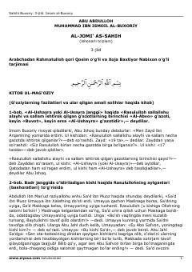

AAImom al-Buxoriyning 'Al-Jome' as-Sahih' asarining uchinchi jildi.
Ushbu kitob Imom al-Buxoriyning mashhur 'Al-Jome' as-Sahih' asarining uchinchi jildi bo'lib, unda g'azotlar, Badr jangi va sahobalar hayotiga oid hadislar jamlangan. Asar islom huquqi va tarixi bo'yicha eng ishonchli manbalardan biri hisoblanadi.